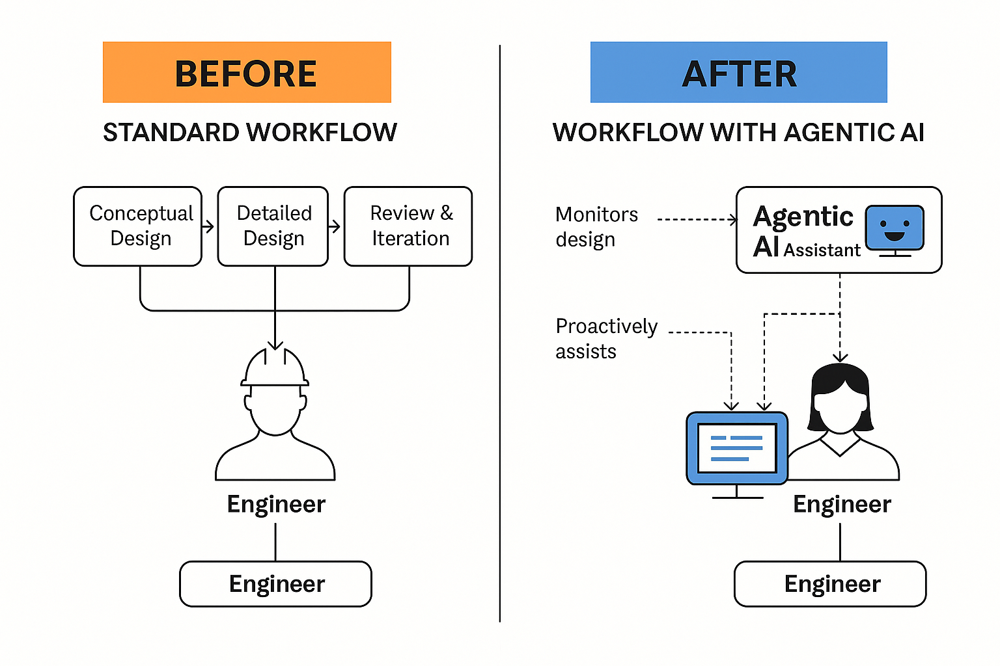

What if every design engineer in your team had a tireless assistant working 24/7, cutting design iterations by 40%? One that understood structural constraints, cross-checked BIM models, flagged clashes, generated optimal layouts, predicted construction risks, and even drafted project documentation—all in real time?
Welcome to the age of Agentic AI in metro design. This isn't science fiction. It's the next evolution of AI—and Pragyametrics is bringing it to the heart of India's infrastructure revolution.
Why Metro Design Needs a Revolution
Designing metro infrastructure is complex. Engineers deal with massive amounts of data, constant design revisions, compliance checks, and tight submission schedules. The industry still depends heavily on manual workflows, human intuition, and overburdened teams.
A single design conflict discovered late can delay projects by weeks and cost millions in rework. And with metro rail networks expanding rapidly across Indian cities, the pressure to deliver designs faster and better has never been greater.
The Critical Question
In an era where AI writes code, analyzes MRIs, and flies aircraft autonomously, why are we still designing viaducts, tunnels, and station layouts by dragging lines in CAD?
The answer isn't lack of will. It's lack of tools built for the real world of infrastructure design.
Until now.
What is Agentic AI?
Agentic AI is more than automation. It's not just scripts or macros. It's not just BIM model plugins.
Agentic AI refers to AI systems that operate with autonomy, context awareness, and intent. Think of them as digital co-workers that understand engineering logic, learn from your workflows, and proactively assist with decisions.
Unlike passive tools, agentic AI systems can:
- Monitor evolving project models and flag inconsistencies (e.g., detecting when a structural element conflicts with planned MEP routes before they become costly site issues)
- Suggest optimal girder placements or station layouts based on constraints
- Auto-detect regulatory compliance gaps
- Interact with multiple team members and models across disciplines
- Generate natural language explanations and reports for client submissions
Traditional BIM tools may assist with model creation and coordination, but they lack the contextual awareness and proactive reasoning that Agentic AI enables.
This is not replacing engineers. It's amplifying them.
From Automation to Agentic Collaboration
Where traditional AI ends, agentic AI begins.
CAD automation draws lines. Agentic AI asks, "Is this the most efficient geometry for seismic resilience?"
BIM plugins run clash detection. Agentic AI suggests rerouting HVAC systems to reduce construction conflicts.
Risk models flag red zones. Agentic AI cross-references soil data, design loads, and vendor history to recommend risk-mitigated designs.
The leap is collaboration. Engineers don't just use these agents. They interact with them.
Example Chat Interface:
Why Pragyametrics is Leading This Shift
While the world debates AI ethics, Pragyametrics is building agentic AI systems for India's most pressing infrastructure challenges.
Our platform is trained on:
- Metro rail structural standards
- Real project datasets and BIM workflows
- IS codes and regulatory compliance guides
We're not adding AI to civil engineering. We're embedding engineering logic inside AI agents.
What makes us different?
- We focus on agentic intelligence, not automation.
- Our systems are project-aware: they learn from ongoing models, not just rules.
- We co-develop with real metro engineers to match live design expectations.
The result?
- 40% faster design turnaround
- 80% reduction in clash-related rework
- Sharper cost estimation, smarter risk mitigation, and more confident client submissions
The Future is Not Just AI-Enabled. It's Agentic.
Metro projects are growing in scale, speed, and complexity. You can either stretch your existing team thin—or augment them with intelligent allies.
Pragyametrics invites forward-thinking metro design firms, EPCs, and BIM leaders to step into the future: a world where your engineers are no longer alone against the clock, the codes, and the chaos.
They'll have someone—or something—watching their back.
Ready to transform your metro design process?
Take the first step toward implementing Agentic AI in your infrastructure projects. Schedule a consultation with our team to learn how Pragyametrics can reduce your design time by 40% while enhancing quality.
Contact Us Now